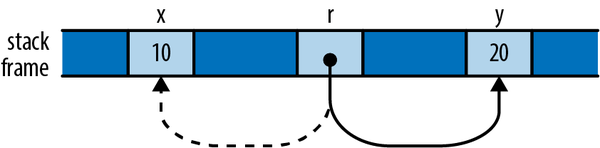
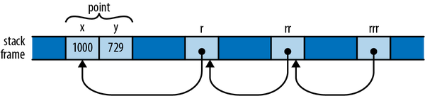
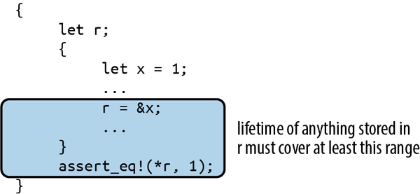
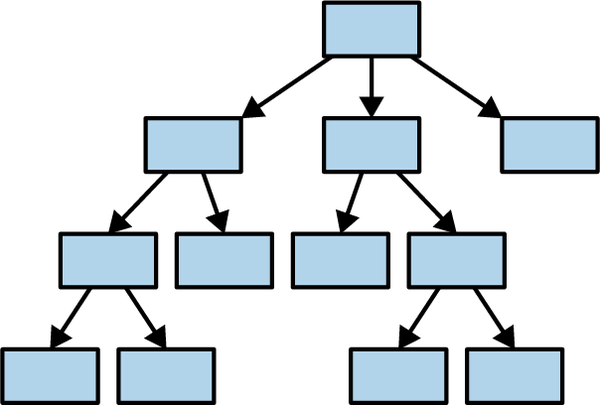

Chapter 5. References
Libraries cannot provide new inabilities.
Mark Miller
In the last chapter, we discussed the types Box<T>, Vec<T>, and String, all of which contain a pointer to some data in the heap, which they own. A value’s owner is responsible for cleaning up after it: dropping a Box<T> drops the T as well. Rust also has non-owning pointer types called references, which have no effect on their referents’ lifetimes. A reference points to a value and grants read or read-write access to it, usually temporary access. It does not grant ownership. Rust refers to creating a reference as borrowing: what you have borrowed, you must eventually return to its owner.
The references themselves are nothing special—under the hood, they’re just addresses. But the rules that keep them safe are novel to Rust; outside of research languages, you won’t have seen anything like them before. And although these rules are the part of Rust that requires the most effort to master, the breadth of classic, absolutely everyday bugs they prevent is surprising, and their effect on multithreaded programming is liberating. This is Rust’s radical wager, again.
In this chapter, we’ll walk through how references work in Rust; show how references, functions, and user-defined types all incorporate lifetime information to ensure that they’re used safely; and illustrate some common categories of bugs that these efforts prevent, at compile time and without run-time performance penalties.
Reference Basics
As an example, let’s suppose we’re going to build a table of murderous Renaissance artists and the works they’re known for. Rust’s standard library includes a hash table type, so we can define our type like this:
usestd::collections::HashMap;typeTable=HashMap<String,Vec<String>>;
In other words, this is a hash table that maps String values to Vec<String> values, taking the name of an artist to a list of the names of their works. You can iterate over the entries of a HashMap with a for loop, so we can write a function to print out a Table:
fnshow(table:Table){for(artist,works)intable{println!("works by {artist}:");forworkinworks{println!(" {work}");}}}
Constructing and printing the table is straightforward:
fnmain(){letmuttable=Table::new();table.insert("Gesualdo".to_string(),vec!["many madrigals".to_string(),"Tenebrae Responsoria".to_string()]);table.insert("Caravaggio".to_string(),vec!["The Musicians".to_string(),"The Calling of St. Matthew".to_string()]);table.insert("Cellini".to_string(),vec!["Perseus with the head of Medusa".to_string(),"a salt cellar".to_string()]);show(table);}
And it all works fine:
$cargorunRunning `/home/jimb/rust/book/fragments/target/debug/fragments`works by Gesualdo:many madrigalsTenebrae Responsoriaworks by Cellini:Perseus with the head of Medusaa salt cellarworks by Caravaggio:The MusiciansThe Calling of St. Matthew$
But if you’ve read the previous chapter’s section on moves, this definition for show should raise a few questions. In particular, HashMap is not Copy—it can’t be, since it owns a dynamically allocated table. So when the program calls show(table), the whole structure gets moved to the function, leaving the variable table uninitialized. (It also iterates over its contents in no specific order, so if you’ve gotten a different order, don’t worry.) If the calling code tries to use table now, it’ll run into trouble:
...show(table);assert_eq!(table["Gesualdo"][0],"many madrigals");
Rust complains that table isn’t available anymore:
error: borrow of moved value: `table`|20 | let mut table = Table::new();| --------- move occurs because `table` has type| `HashMap<String, Vec<String>>`,| which does not implement the `Copy` trait...31 | show(table);| ----- value moved here32 | assert_eq!(table["Gesualdo"][0], "many madrigals");| ^^^^^ value borrowed here after movenote: consider changing this parameter type in function `show` to borrow insteadif owning the value isn't necessary|7 | fn show(table: Table) {| ---- ^^^^^ this parameter takes ownership of the value| || in this functionhelp: consider cloning the value if the performance cost is acceptable|35 | show(table.clone());| ++++++++
In fact, if we look into the definition of show, the outer for loop takes ownership of the hash table and consumes it entirely; and the inner for loop does the same to each of the vectors. (We saw this behavior earlier, in the “liberté, égalité, fraternité” example.) Because of move semantics, we’ve completely destroyed the entire structure simply by trying to print it out. Thanks, Rust!
The compiler helpfully suggests that we could either create a reference or clone the value to avoid this problem. In this case, the right solution is to use references, which let you access a value without affecting its ownership. References come in two kinds:
-
A shared reference lets you read but not modify its referent. However, you can have as many shared references to a particular value at a time as you like. The expression
&eyields a shared reference toe’s value; ifehas the typeT, then&ehas the type&T, pronounced “refT.” Shared references areCopy. -
If you have a mutable reference to a value, you may both read and modify the value. However, you may not have any other references of any sort to that value active at the same time. The expression
&mut eyields a mutable reference toe’s value; you write its type as&mut T, which is pronounced “ref muteT.” Mutable references are notCopy.
You can think of the distinction between shared and mutable references as a way to enforce a multiple readers or single writer rule at compile time. In fact, this rule doesn’t apply only to references; it covers the borrowed value’s owner as well. As long as there are shared references to a value, not even its owner can modify it; the value is locked down. Nobody can modify table while show is working with it. Similarly, if there is a mutable reference to a value, it has exclusive access to the value; you can’t use the owner at all, until the mutable reference goes away. Keeping sharing and mutation fully separate turns out to be essential to memory safety, for reasons we’ll go into later in the chapter.
The printing function in our example doesn’t need to modify the table, just read its contents. So the caller should be able to pass it a shared reference to the table, as follows:
show(&table);
References are non-owning pointers, so the table variable remains the owner of the entire structure; show has just borrowed it for a bit. Naturally, we’ll need to adjust the definition of show to match, but you’ll have to look closely to see the difference:
fnshow(table:&Table){for(artist,works)intable{println!("works by {artist}:");forworkinworks{println!(" {work}");}}}
The type of show’s parameter table has changed from Table to &Table: instead of passing the table by value (and hence moving ownership into the function), we’re now passing a shared reference. That’s the only textual change. But how does this play out as we work through the body?
Whereas our original outer for loop took ownership of the HashMap and consumed it, in our new version it receives a shared reference to the HashMap. Iterating over a shared reference to a HashMap is defined to produce shared references to each entry’s key and value: artist has changed from a String to a &String, and works from a Vec<String> to a &Vec<String>.
The inner loop is changed similarly. Iterating over a shared reference to a vector is defined to produce shared references to its elements, so work is now a &String. No ownership changes hands anywhere in this function; it’s just passing around non-owning references.
Now, if we wanted to write a function to alphabetize the works of each artist, a shared reference doesn’t suffice, since shared references don’t permit modification. Instead, the sorting function needs to take a mutable reference to the table:
fnsort_works(table:&mutTable){for(_artist,works)intable{works.sort();}}
And we need to pass it one:
sort_works(&muttable);
This mutable borrow grants sort_works the ability to read and modify our structure, as required by the vectors’ sort method.
When we pass a value to a function in a way that moves ownership of the value to the function, we say that we have passed it by value. If we instead pass the function a reference to the value, we say that we have passed the value by reference. For example, we fixed our show function by changing it to accept the table by reference, rather than by value. Many languages draw this distinction, but it’s especially important in Rust, because it spells out how ownership is affected.
Working with References
The preceding example shows a pretty typical use for references: allowing functions to access or manipulate a structure without taking ownership. But references are more flexible than that, so let’s look at some examples to get a more detailed view of what’s going on.
Implicit and Explicit References
If you’re familiar with references in C++, you’ll have noticed Rust references are quite similar. Most importantly, they’re both just addresses at the machine level. The syntax is a bit different, though.
In C++, references are created implicitly by conversion, and dereferenced implicitly too:
// C++ code!intx=10;int&r=x;// initialization creates reference implicitlyassert(r==10);// implicitly dereference r to see x's valuer=20;// stores 20 in x, r itself still points to x
In Rust, references are created explicitly with the & operator, and dereferenced explicitly with the * operator:
// Back to Rust code from this point onward.letx=10;letr=&x;// &x is a shared reference to xassert_eq!(*r,10);// explicitly dereference r
To create a mutable reference, use the &mut operator:
letmuty=32;letm=&muty;// &mut y is a mutable reference to y*m+=32;// explicitly dereference m to set y's valueassert_eq!(*m,64);// or to get y's current value
But you might recall that, when we fixed the show function to take the table of artists by reference instead of by value, we never had to use the & or * operator. In fact, the body of the function didn’t have to change at all. Why is that?
Since references are so widely used in Rust, the language often supports using a reference in place of a value. For example, printing a reference is the same as printing its value, so println!("works by {artist}:"); does the same thing whether artist is a String or a reference to one. As we already mentioned, a for loop over a reference produces references to the values inside. No explicit * is needed in either case.
The . operator also implicitly dereferences its left operand, if needed:
letaria=Anime{name:"Aria: The Animation",bechdel_pass:true,};letanime_ref=&aria;assert_eq!(anime_ref.name,"Aria: The Animation");// Equivalent to the above, but with the dereference written out:assert_eq!((*anime_ref).name,"Aria: The Animation");
The . operator can also implicitly borrow a reference to its left operand, if needed for a method call. For example, Vec’s sort method takes a mutable reference to the vector, so these two calls are equivalent:
letmutv=vec![1973,1968];v.sort();// implicitly borrows a mutable reference to v(&mutv).sort();// equivalent, but more verbose
In short, Rust automatically creates references and dereferences them in a few places, for convenience. Everywhere else, the & and * operators are required, for clarity.
Assigning References
Assigning a reference to a variable makes that variable point somewhere new:
letx=10;lety=20;letmutr=&x;ifb{r=&y;}assert!(*r==10||*r==20);
The reference r initially points to x. But if b is true, the code points it at y instead, as illustrated in Figure 5-1.

Figure 5-1. The reference r, now pointing to y instead of x
This behavior may seem too obvious to be worth mentioning: of course r now points to y, since we stored &y in it. But we point this out because C++ references behave very differently: as shown earlier, assigning a value to a reference in C++ stores the value in its referent. Once a C++ reference has been initialized, there’s no way to make it point at anything else.
References to References
Rust permits references to references:
structPoint{x:i32,y:i32,}letpoint=Point{x:1000,y:729};letr:&Point=&point;letrr:&&Point=&r;letrrr:&&&Point=&rr;
(We’ve written out the reference types for clarity, but you could omit them; there’s nothing here Rust can’t infer for itself.) The . operator follows as many references as it takes to find its target:
assert_eq!(rrr.y,729);
In memory, the references are arranged as shown in Figure 5-2.

Figure 5-2. A chain of references to references
So the expression rrr.y, guided by the type of rrr, actually traverses three references to get to the Point before fetching its y field.
Comparing References
Like the . operator, Rust’s comparison operators “see through” any number of references:
letx=10;lety=10;letrx=&x;letry=&y;letrrx=℞letrry=&ry;assert!(rrx<=rry);assert!(rrx==rry);
The final assertion here succeeds, even though rrx and rry point at different values (namely, rx and ry), because the == operator follows all the references and performs the comparison on their final targets, x and y. This is almost always the behavior you want, especially when writing generic functions. If you actually want to know whether two references point to the same memory, you can use std::ptr::eq, which compares them as addresses:
assert!(rx==ry);// their referents are equalassert!(!std::ptr::eq(rx,ry));// but occupy different addresses
Note that the operands of a comparison must have exactly the same type, including the references:
assert!(rx==rrx);// error: type mismatch: `&i32` vs `&&i32`assert!(rx==*rrx);// this is okay
References Are Never Null
Rust references are never null. There’s no analogue to C’s NULL or C++’s nullptr. There is no default initial value for a reference (you can’t use any variable until it’s been initialized, regardless of its type) and Rust won’t convert integers to references (outside of unsafe code), so you can’t convert zero into a reference.
C and C++ code often uses a null pointer to indicate the absence of a value: for example, the malloc function returns either a pointer to a new block of memory or nullptr if there isn’t enough memory available to satisfy the request. In Rust, if you need a value that is either a reference to something or not, use the type Option<&T>. At the machine level, Rust represents None as a null pointer and Some(r), where r is a &T value, as the nonzero address, so Option<&T> is just as efficient as a nullable pointer in C or C++, even though it’s safer: its type requires you to check whether it’s None before you can use it.
Borrowing References to Arbitrary Expressions
Whereas C and C++ only let you apply the & operator to certain kinds of expressions, Rust lets you borrow a reference to the value of any sort of expression at all:
fnfactorial(n:usize)->usize{(1..n+1).product()}letr=&factorial(6);// Arithmetic operators can see through one level of references.assert_eq!(r+&1009,1729);
In situations like this, Rust simply creates an anonymous variable to hold the expression’s value and makes the reference point to that. The lifetime of this anonymous variable depends on what you do with the reference:
-
If you immediately assign the reference to a variable in a
letstatement (or make it part of some struct or array that is being immediately assigned), then Rust makes the anonymous variable live as long as the variable theletinitializes. In the preceding example, Rust would do this for the referent ofr. -
Otherwise, the anonymous variable lives to the end of the enclosing statement. In our example, the anonymous variable created to hold
1009lasts only to the end of theassert_eq!statement.
If you’re used to C or C++, this may sound error-prone. But remember that Rust will never let you write code that would produce a dangling reference. If the reference could ever be used beyond the anonymous variable’s lifetime, Rust will always report the problem to you at compile time. You can then fix your code to keep the referent in a named variable with an appropriate lifetime.
Fat Pointers
The references we’ve shown so far are all simple addresses. A reference to a slice is slightly different. It contains both the starting address of the slice and its length. Because slice references have these two fields, they are larger than other references. They are called fat pointers.
There is one other kind of fat pointer in Rust: pointers to trait objects, using the dyn keyword. We’ll cover those in “Using dyn”.
Aside from carrying a little extra data, slice and trait object references behave just like the other sorts of references we’ve shown so far in this chapter: they don’t own their referents, they are not allowed to outlive their referents, they may be mutable or shared, and so on.
Reference Safety
As we’ve presented them so far, references look pretty much like ordinary pointers in C or C++. But those are unsafe; how does Rust keep its references under control? Perhaps the best way to see the rules in action is to try to break them.
To convey the fundamental ideas, we’ll start with the simplest cases, showing how Rust ensures references are used properly within a single function body. Then we’ll look at passing references between functions and storing them in data structures. This entails giving said functions and data types lifetime parameters, which we’ll explain. Finally, we’ll present some shortcuts that Rust provides to simplify common usage patterns. Throughout, we’ll be showing how Rust points out broken code and often suggests solutions.
Borrowing a Local Variable
Here’s a pretty obvious case. You can’t borrow a reference to a local variable and take it out of the variable’s scope:
{letr;{letx=1;r=&x;}assert_eq!(*r,1);// bad: reads memory `x` used to occupy}
The Rust compiler rejects this program, with a detailed error message:
error: `x` does not live long enough|7 | r = &x;| ^^ borrowed value does not live long enough8 | }| - `x` dropped here while still borrowed9 | assert_eq!(*r, 1); // bad: reads memory `x` used to occupy| ----------------- borrow later used here
Rust’s complaint is that x lives only until the end of the inner block, whereas the reference to it is used later, in the outer block, which is verboten.
While it’s obvious to a human reader that this program is broken, it’s worth looking at how Rust itself reached that conclusion. Even this simple example shows the logical tools Rust uses to check much more complex code.
Rust tries to assign each reference in your program a lifetime that meets the constraints imposed by how it is used. A lifetime is some stretch of your program for which a reference could be safe to use: a statement, an expression, the scope of some variable, or the like.
There is only one reference borrowed in this code: the reference we borrow to x and store in r. Rust will try to assign a valid lifetime to that reference. If it succeeds, the code is valid. However, there are two constraints on this lifetime.
First, the reference to x must not outlive x itself, as shown in Figure 5-3.
Beyond the point where x goes out of scope, the reference becomes a dangling pointer. We say that the variable’s lifetime must contain or enclose that of the reference borrowed from it.

Figure 5-3. Permissible lifetimes for &x
Second, the reference’s lifetime must last all the way to its last use, as shown in Figure 5-4.
When we dereference r at the end of the example, Rust concludes that the lifetime must extend to that point. We say that the reference’s lifetime must contain or enclose all its uses.

Figure 5-4. Permissible lifetimes for reference stored in r
The first kind of constraint limits how large a reference’s lifetime can be, while the second kind limits how small it can be. Rust simply tries to find a lifetime for each reference that satisfies all these constraints. In our example, however, there is no such lifetime, as shown in Figure 5-5.

Figure 5-5. A reference with contradictory constraints on its lifetime
Let’s now consider a different example where things do work out. We have the same kinds of constraints: the reference’s lifetime must be contained by x’s, but fully enclose r’s. But because r’s last use is inside the scope of x now, there is a lifetime that meets the constraints, as shown in Figure 5-6.

Figure 5-6. A reference with a lifetime enclosing r’s scope, but within x’s scope
These rules apply in a natural way when you borrow a reference to some part of some larger data structure, like an element of a vector:
letv=vec![1,2,3];letr=&v[1];
Since v owns the vector, which owns its elements, the lifetime of v must enclose that of the reference &v[1]. Similarly, if you store a reference in some data structure, its lifetime must enclose that of the data structure. For example, if you build a vector of references, all of them must have lifetimes enclosing that of the variable that owns the vector.
Note that lifetimes are strictly a compile-time concept. They are figments of the Rust compiler’s imagination:
-
Lifetimes don’t take up space at run time. They have no in-memory representation. At run time, a reference is nothing but an address.
-
Lifetimes don’t control how long values last. A value in a variable is dropped when you assign a different value to it or the variable goes out of scope. Lifetimes can’t change that.
-
Lifetimes don’t affect the compiled code. The Rust compiler uses them to check that your code is safe, then discards them.
The process we’ve described in this section is essentially the way the Rust borrow checker validates all code. Bringing more language features into the picture—e.g., data structures and function calls—introduces new sorts of constraints, but the principle remains the same: first, understand the constraints arising from the way the program uses references; then, find lifetimes that satisfy those constraints. This is not so different from the process C and C++ programmers impose on themselves; the difference is that Rust knows the rules and enforces them.
Receiving References as Function Arguments
When we pass a reference to a function, how does Rust make sure the function uses it safely? Suppose we have a function f that takes a reference and stores it in a global variable. We’ll need to make a few revisions to this, but here’s a first cut:
// This code has several problems, and doesn't compile.staticmutSTASH:&i32;fnf(p:&i32){STASH=p;}
Rust’s equivalent of a global variable is called a static: it’s a value that’s created when the program starts and lasts until it terminates. (Like any other declaration, Rust’s module system controls where statics are visible, so they’re only “global” in their lifetime, not their visibility.) We cover statics in Chapter 8, but for now we’ll just call out a few rules that the code just shown doesn’t follow:
-
Every static must be initialized.
-
Mutable statics are inherently not thread-safe (after all, any thread can access a static at any time), and even in single-threaded programs, they can fall prey to other sorts of reentrancy problems. For these reasons, you may access a mutable static only within an
unsafeblock. In this example we’re not concerned with those particular problems, so we’ll just throw in anunsafeblock and move on.
With those revisions made, we now have the following:
staticmutSTASH:&i32=&128;fnf(p:&i32){// still not good enoughunsafe{STASH=p;}}
We’re almost done. To see the remaining problem, we need to write out a few things that Rust is helpfully letting us omit. The signature of f as written here is actually shorthand for the following:
fnf<'a>(p:&'ai32){...}
Here, the lifetime 'a (pronounced “tick A”) is a lifetime parameter of f. You can read <'a> as “for any lifetime 'a” so when we write fn f<'a>(p: &'a i32), we’re defining a function that takes a reference to an i32 with any given lifetime 'a.
Since we must allow 'a to be any lifetime, things had better work out if it’s the smallest possible lifetime: one just enclosing the call to f. This assignment then becomes a point of contention:
STASH=p;
Since STASH lives for the program’s entire execution, the reference type it holds must have a lifetime of the same length; Rust calls this the 'static lifetime. But the lifetime of p’s reference is some 'a, which could be anything, as long as it encloses the call to f. So, Rust rejects our code:
error: lifetime may not live long enough|3 | fn f(p: &i32) { // still not good enough| - let's call the lifetime of this reference `'1`...5 | STASH = p;| ^^^^^^^^^ assignment requires that `'1` must outlive `'static`
At this point, it’s clear that our function can’t accept just any reference as an argument. But as Rust points out, it ought to be able to accept a reference that has a 'static lifetime: storing such a reference in STASH can’t create a dangling pointer. And indeed, the following code compiles just fine:
staticmutSTASH:&i32=&10;fnf(p:&'statici32){unsafe{STASH=p;}}
This time, f’s signature spells out that p must be a reference with lifetime 'static, so there’s no longer any problem storing that in STASH. We can only apply f to references to other statics, but that’s the only thing that’s certain not to leave STASH dangling anyway. So we can write:
staticWORTH_POINTING_AT:i32=1000;f(&WORTH_POINTING_AT);
Since WORTH_POINTING_AT is a static, the type of &WORTH_POINTING_AT is &'static i32, which is safe to pass to f.
Take a step back, though, and notice what happened to f’s signature as we amended our way to correctness: the original f(p: &i32) ended up as f(p: &'static i32). In other words, we were unable to write a function that stashed a reference in a global variable without reflecting that intention in the function’s signature. In Rust, a function’s signature always exposes the body’s behavior.
Conversely, if we do see a function with a signature like g(p: &i32) (or with the lifetimes written out, g<'a>(p: &'a i32)), we can tell that it does not stash its argument p anywhere that will outlive the call. There’s no need to look into g’s definition; the signature alone tells us what g can and can’t do with its argument. This fact ends up being very useful when you’re trying to establish the safety of a call to the function.
Passing References to Functions
Now that we’ve shown how a function’s signature relates to its body, let’s examine how it relates to the function’s callers. Suppose you have the following code:
// This could be written more briefly: fn g(p: &i32),// but let's write out the lifetimes for now.fng<'a>(p:&'ai32){...}letx=10;g(&x);
From g’s signature alone, Rust knows it will not save p anywhere that might outlive the call: any lifetime that encloses the call must work for 'a. So Rust chooses the smallest possible lifetime for &x: that of the call to g. This meets all constraints: it doesn’t outlive x, and it encloses the entire call to g. So this code passes muster.
Note that although g takes a lifetime parameter 'a, we didn’t need to mention it when calling g. You only need to worry about lifetime parameters when defining functions and types; when using them, Rust infers the lifetimes for you.
What if we tried to pass &x to our function f from earlier that stores its argument in a static?
fnf(p:&'statici32){...}letx=10;f(&x);
This fails to compile: the reference &x must not outlive x, but by passing it to f, we constrain it to live at least as long as 'static. There’s no way to satisfy everyone here, so Rust rejects the code.
Returning References
It’s common for a function to take a reference to some data structure and then return a reference into some part of that structure. For example, here’s a function that returns a reference to the smallest element of a slice:
// v should have at least one element.fnsmallest(v:&[i32])->&i32{letmuts=&v[0];forrin&v[1..]{if*r<*s{s=r;}}s}
We’ve omitted lifetimes from that function’s signature in the usual way. When a function takes a single reference as an argument and returns a single reference, Rust assumes that the two must have the same lifetime. Writing this out explicitly would give us:
fnsmallest<'a>(v:&'a[i32])->&'ai32{...}
Suppose we call smallest like this:
lets;{letparabola=[9,4,1,0,1,4,9];s=smallest(¶bola);}assert_eq!(*s,0);// bad: points to element of dropped array
From smallest’s signature, we can see that its argument and return value must have the same lifetime, 'a. In our call, the argument ¶bola must not outlive parabola itself, yet smallest’s return value must live at least as long as s. There’s no possible lifetime 'a that can satisfy both constraints, so Rust rejects the code:
error: `parabola` does not live long enough|10 | let parabola = [9, 4, 1, 0, 1, 4, 9];| -------- binding `parabola` declared here11 | s = smallest(¶bola);| -------- borrowed value does not live long enough12 | }| - `parabola` dropped here while still borrowed13 | assert_eq!(*s, 0); // bad: points to element of dropped array| ----------------- borrow later used here
Moving s so that its lifetime is clearly contained within parabola’s fixes the problem:
{letparabola=[9,4,1,0,1,4,9];lets=smallest(¶bola);assert_eq!(*s,0);// fine: parabola still alive}
Lifetimes in function signatures let Rust assess the relationships between the references you pass to the function and those the function returns, and they ensure they’re being used safely.
Structs Containing References
How does Rust handle references stored in data structures? Here’s the same erroneous program we looked at earlier, except that we’ve put the reference inside a structure:
// This does not compile.structS{r:&i32,}lets;{letx=10;s=S{r:&x};}assert_eq!(*s.r,10);// bad: reads from dropped `x`
The safety constraints Rust places on references can’t magically disappear just because we hid the reference inside a struct. Somehow, those constraints must end up applying to S as well. Indeed, Rust is skeptical:
error: missing lifetime specifier|7 | r: &i32| ^ expected named lifetime parameter
Whenever a reference type appears inside another type’s definition, you must write out its lifetime. You can write this:
structS{r:&'statici32,}
This says that r can only refer to i32 values that will last for the lifetime of the program, which is rather limiting. The alternative is to give the type a lifetime parameter 'a and use that for r:
structS<'a>{r:&'ai32,}
Now the S type has a lifetime, just as reference types do. Each value you create of type S gets a fresh lifetime 'a, which becomes constrained by how you use the value. The lifetime of any reference you store in r had better enclose 'a, and 'a must outlast the lifetime of wherever you store the S.
Turning back to the preceding code, the expression S { r: &x } creates a fresh S value with some lifetime 'a. When you store &x in the r field, you constrain 'a to lie entirely within x’s lifetime.
The assignment s = S { ... } stores this S in a variable whose lifetime extends to the end of the example, constraining 'a to outlast the lifetime of s. And now Rust has arrived at the same contradictory constraints as before: 'a must not outlive x, yet must live at least as long as s. No satisfactory lifetime exists, and Rust rejects the code. Disaster averted!
How does a type with a lifetime parameter behave when placed inside some other type?
structD{s:S,// not adequate}
Rust is skeptical, just as it was when we tried placing a reference in S without specifying its lifetime:
error: missing lifetime specifier|8 | s: S, // not adequate| ^ expected named lifetime parameter|
We can’t leave off S’s lifetime parameter here: Rust needs to know how D’s lifetime relates to that of the reference in its S in order to apply the same checks to D that it does for S and plain references.
We could give s the 'static lifetime. This works:
structD{s:S<'static>,}
With this definition, the s field may only borrow values that live for the entire execution of the program. That’s somewhat restrictive, but it does mean that D can’t possibly borrow a local variable; there are no special constraints on D’s lifetime.
The error message from Rust actually suggests another approach, which is more general:
help: consider introducing a named lifetime parameter|7 | struct D<'a> {8 | s: S<'a>,|
Here, we give D its own lifetime parameter and pass that to S:
structD<'a>{s:S<'a>,}
By taking a lifetime parameter 'a and using it in s’s type, we’ve allowed Rust to relate D value’s lifetime to that of the reference its S holds.
We showed earlier how a function’s signature exposes what it does with the references we pass it. Now we’ve shown something similar about types: a type’s lifetime parameters always reveal whether it contains references with interesting (that is, non-'static) lifetimes and what those lifetimes can be.
For example, suppose we have a parsing function that takes a slice of bytes and returns a structure holding the results of the parse:
fnparse_record<'i>(input:&'i[u8])->Record<'i>{...}
Without looking into the definition of the Record type at all, we can tell that, if we receive a Record from parse_record, whatever references it contains must point into the input buffer we passed in, and nowhere else (except perhaps at 'static values).
In fact, this exposure of internal behavior is the reason Rust requires types that contain references to take explicit lifetime parameters. There’s no reason Rust couldn’t simply make up a distinct lifetime for each reference in the struct and save you the trouble of writing them out. Early versions of Rust actually behaved this way, but developers found it confusing: it is helpful to know when one value borrows something from another value, especially when working through errors.
It’s not just references and types like S that have lifetimes. Every type in Rust has a lifetime, including i32 and String. Most are simply 'static, meaning that values of those types can live for as long as you like; for example, a Vec<i32> is self-contained and needn’t be dropped before any particular variable goes out of scope. But a type like Vec<&'a i32> has a lifetime that must be enclosed by 'a: it must be dropped while its referents are still alive.
Distinct Lifetime Parameters
Suppose you’ve defined a structure containing two references like this:
structS<'a>{x:&'ai32,y:&'ai32,}
Both references use the same lifetime 'a. This could be a problem if your code wants to do something like this:
letx=10;letr;{lety=20;{lets=S{x:&x,y:&y};r=s.x;}}println!("{r}");
This code doesn’t create any dangling pointers. The reference to y stays in s, which goes out of scope before y does. The reference to x ends up in r, which doesn’t outlive x.
If you try to compile this, however, Rust will complain that y does not live long enough, even though it clearly does. Why is Rust worried? If you work through the code carefully, you can follow its reasoning:
-
Both fields of
Sare references with the same lifetime'a, so Rust must find a single lifetime that works for boths.xands.y. -
We assign
r = s.x, requiring'ato encloser’s lifetime. -
We initialized
s.ywith&y, requiring'ato be no longer thany’s lifetime.
These constraints are impossible to satisfy: no lifetime is shorter than y’s scope but longer than r’s. Rust balks.
The problem arises because both references in S have the same lifetime 'a. Changing the definition of S to let each reference have a distinct lifetime fixes everything:
structS<'a,'b>{x:&'ai32,y:&'bi32,}
With this definition, s.x and s.y have independent lifetimes. What we do with s.x has no effect on what we store in s.y, so it’s easy to satisfy the constraints now: 'a can simply be r’s lifetime, and 'b can be s’s. (y’s lifetime would work too for 'b, but Rust tries to choose the smallest lifetime that works.) Everything ends up fine.
Function signatures can have similar effects. Suppose we have a function like this:
fnf<'a>(r:&'ai32,s:&'ai32)->&'ai32{r}// perhaps too tight
Here, both reference parameters use the same lifetime 'a, which can unnecessarily constrain the caller in the same way we’ve shown previously. If this is a problem, you can let parameters’ lifetimes vary independently:
fnf<'a,'b>(r:&'ai32,s:&'bi32)->&'ai32{r}// looser
The downside to this is that adding lifetimes can make types and function signatures harder to read. Your authors tend to try the simplest possible definition first and then loosen restrictions until the code compiles. Since Rust won’t permit the code to run unless it’s safe, simply waiting to be told when there’s a problem is a perfectly acceptable tactic.
Omitting Lifetime Parameters
We’ve shown plenty of functions so far in this book that return references or take them as parameters, but we’ve usually not needed to spell out which lifetime is which. The lifetimes are there; Rust is just letting us omit them when it’s reasonably obvious what they should be.
In the simplest cases, you may never need to write out lifetimes for your parameters. Rust just assigns a distinct lifetime to each spot that needs one. For example:
structS<'a,'b>{x:&'ai32,y:&'bi32,}fnsum_r_xy(r:&i32,s:S)->i32{r+s.x+s.y}
This function’s signature is shorthand for:
fnsum_r_xy<'a,'b,'c>(r:&'ai32,s:S<'b,'c>)->i32
If you do return references or other types with lifetime parameters, Rust still tries to make the unambiguous cases easy. If there’s only a single lifetime that appears among your function’s parameters, then Rust assumes any lifetimes in your return value must be that one:
fnfirst_third(point:&[i32;3])->(&i32,&i32){(&point[0],&point[2])}
With all the lifetimes written out, the equivalent would be:
fnfirst_third<'a>(point:&'a[i32;3])->(&'ai32,&'ai32)
If there are multiple lifetimes among your parameters, then there’s no natural reason to prefer one over the other for the return value, and Rust makes you spell out what’s going on.
If your function is a method on some type and takes its self parameter by reference, then that breaks the tie: Rust assumes that self’s lifetime is the one to give everything in your return value. (A self parameter refers to the value the method is being called on. It’s Rust’s equivalent of this in C++, Java, or JavaScript, or self in Python. We’ll cover methods in “Defining Methods with impl”.)
For example, you can write the following:
structStringTable{elements:Vec<String>,}implStringTable{fnfind_by_prefix(&self,prefix:&str)->Option<&String>{foriin0..self.elements.len(){ifself.elements[i].starts_with(prefix){returnSome(&self.elements[i]);}}None}}
The find_by_prefix method’s signature is shorthand for:
fnfind_by_prefix<'a,'b>(&'aself,prefix:&'bstr)->Option<&'aString>
Rust assumes that whatever you’re borrowing, you’re borrowing from self.
Again, these are just abbreviations, meant to be helpful without introducing surprises. When they’re not what you want, you can always write the lifetimes out explicitly.
Sharing Versus Mutation
So far, we’ve discussed how Rust ensures no reference will ever point to a variable that has gone out of scope. But there are other ways to introduce dangling pointers. Here’s an easy case:
letv=vec![4,8,19,27,34,10];letr=&v;letaside=v;// move vector to asider[0];// bad: uses `v`, which is now uninitialized
The assignment to aside moves the vector, leaving v uninitialized, and turns r into a dangling pointer, as shown in Figure 5-7.

Figure 5-7. A reference to a vector that has been moved away
Although v stays in scope for r’s entire lifetime, the problem here is that v’s value gets moved elsewhere, leaving v uninitialized while r still refers to it. Naturally, Rust catches the error:
error: cannot move out of `v` because it is borrowed|9 | let v = vec![4, 8, 19, 27, 34, 10];| - binding `v` declared here10 | let r = &v;| -- borrow of `v` occurs here11 | let aside = v; // move vector to aside| ^ move out of `v` occurs here12 | r[0]; // bad: uses `v`, which is now uninitialized| - borrow later used here
Throughout its lifetime, a shared reference makes its referent read-only: you may not assign to the referent or move its value elsewhere. In this code, r’s lifetime contains the attempt to move the vector, so Rust rejects the program. If you change the program as shown here, there’s no problem:
letv=vec![4,8,19,27,34,10];{letr=&v;r[0];// ok: vector is still there}letaside=v;
In this version, r goes out of scope earlier, the reference’s lifetime ends before v is moved aside, and all is well.
Here’s a different way to wreak havoc. Suppose we have a handy function to extend a vector with the elements of a slice:
fnextend(vec:&mutVec<f64>,slice:&[f64]){foreltinslice{vec.push(*elt);}}
This is a less flexible (and much less optimized) version of the standard library’s extend_from_slice method on vectors. We can use it to build up a vector from slices of other vectors or arrays:
letmutwave=Vec::new();lethead=vec![0.0,1.0];lettail=[0.0,-1.0];extend(&mutwave,&head);// extend wave with another vectorextend(&mutwave,&tail);// extend wave with an arrayassert_eq!(wave,vec![0.0,1.0,0.0,-1.0]);
So we’ve built up one period of a sine wave here. If we want to add another undulation, can we append the vector to itself?
extend(&mutwave,&wave);assert_eq!(wave,vec![0.0,1.0,0.0,-1.0,0.0,1.0,0.0,-1.0]);
This may look fine on casual inspection. But remember that when we add an element to a vector, if its buffer is full, it must allocate a new buffer with more space. Suppose wave starts with space for four elements and so must allocate a larger buffer when extend tries to add a fifth. Memory ends up looking like Figure 5-8.
The extend function’s vec argument borrows wave (owned by the caller), which has allocated itself a new buffer with space for eight elements. But slice continues to point to the old four-element buffer, which has been dropped.

Figure 5-8. A slice turned into a dangling pointer by a vector reallocation
This sort of problem isn’t unique to Rust: modifying collections while pointing into them is delicate territory in many languages. In C++, the std::vector specification cautions you that “reallocation [of the vector’s buffer] invalidates all the references, pointers, and iterators referring to the elements in the sequence.” Similarly, Java says, of modifying a java.util.Hashtable object:
If the Hashtable is structurally modified at any time after the iterator is created, in any way except through the iterator’s own remove method, the iterator will throw a
ConcurrentModificationException.
What’s especially difficult about this sort of bug is that it doesn’t happen all the time. In testing, your vector might always happen to have enough space, the buffer might never be reallocated, and the problem might never come to light.
Rust, however, reports the problem with our call to extend at compile time:
error: cannot borrow `wave` as immutable because it is alsoborrowed as mutable|9 | extend(&mut wave, &wave);| ------ --------- ^^^^^ immutable borrow occurs here| | || | mutable borrow occurs here| mutable borrow later used by call
In other words, we may borrow a mutable reference to the vector, and we may borrow a shared reference to its elements, but those two references’ lifetimes must not overlap. In our case, both references’ lifetimes contain the call to extend, so Rust rejects the code.
These errors both stem from violations of Rust’s rules for mutation and sharing:
- Shared access is read-only access.
-
Values borrowed by shared references are read-only. Across the lifetime of a shared reference, neither its referent, nor anything reachable from that referent, can be changed by anything. There exist no live mutable references to anything in that structure, its owner is held read-only, and so on. It’s really frozen.
- Mutable access is exclusive access.
-
A value borrowed by a mutable reference is reachable exclusively via that reference. Across the lifetime of a mutable reference, there is no other usable path to its referent or to any value reachable from there. The only references whose lifetimes may overlap with a mutable reference are those you borrow from the mutable reference itself.
Rust reported the extend example as a violation of the second rule: since we’ve borrowed a mutable reference to wave, that mutable reference must be the only way to reach the vector or its elements. The shared reference to the slice is itself another way to reach the elements, violating the second rule.
But Rust could also have treated our bug as a violation of the first rule: since we’ve borrowed a shared reference to wave’s elements, the elements and the Vec itself are all read-only. You can’t borrow a mutable reference to a read-only value.
Each kind of reference affects what we can do with the values along the owning path to the referent, and the values reachable from the referent (Figure 5-9).

Figure 5-9. Borrowing a reference affects what you can do with other values in the same ownership tree
Note that in both cases, the path of ownership leading to the referent cannot be changed for the reference’s lifetime. For a shared borrow, the path is read-only; for a mutable borrow, it’s completely inaccessible. So there’s no way for the program to do anything that will invalidate the reference.
Paring these principles down to the simplest possible examples:
letmutx=10;letr1=&x;letr2=&x;// ok: multiple shared borrows permittedx+=10;// error: cannot assign to `x` because it is borrowedletm=&mutx;// error: cannot borrow `x` as mutable because it is// also borrowed as immutableprintln!("{r1}, {r2}, {m}");// the references are used here,// so their lifetimes must last// at least this longletmuty=20;letm1=&muty;letm2=&muty;// error: cannot borrow as mutable more than onceletz=y;// error: cannot use `y` because it was mutably borrowedprintln!("{m1}, {m2}, {z}");// references are used here
It is OK to reborrow a shared reference from a shared reference:
letmutw=(107,109);letr=&w;letr0=&r.0;// ok: reborrowing shared as sharedletm1=&mutr.1;// error: can't reborrow shared as mutableprintln!("{r0}");// r0 gets used here
You can reborrow from a mutable reference:
letmutv=(136,139);letm=&mutv;letm0=&mutm.0;// ok: reborrowing mutable from mutable*m0=137;letr1=&m.1;// ok: reborrowing shared from mutable,// and doesn't overlap with m0v.1;// error: access through other paths still forbiddenprintln!("{r1}");// r1 gets used here
These restrictions are pretty tight. Turning back to our attempted call extend(&mut wave, &wave), there’s no quick and easy way to fix up the code to work the way we ’d like. And Rust applies these rules everywhere: if we borrow, say, a shared reference to a key in a HashMap, we can’t borrow a mutable reference to the HashMap until the shared reference’s lifetime ends.
But there’s good justification for this: designing collections to support unrestricted, simultaneous iteration and modification is difficult and often precludes simpler, more efficient implementations. Java’s Hashtable and C++’s vector don’t bother, and neither Python dictionaries nor JavaScript objects define exactly how such access behaves. Other collection types in JavaScript do, but require heavier implementations as a result. C++’s std::map promises that inserting new entries doesn’t invalidate pointers to other entries in the map, but by making that promise, the standard precludes more cache-efficient designs like Rust’s BTreeMap, which stores multiple entries in each node of the tree.
Here’s another example of the kind of bug these rules catch. An old-school classic mistake in C++ is incorrectly overloading the assignment operator:
// Copy assignment. C++ calls this when user code assigns `obj1 = obj2;`.MyObject&operator=(constMyObject&other){// Clean up some resource held by this object...freeResource(m_resource);// ...then put a new resource in its place.m_resource=allocCopyOfResource(other.m_resource);return*this;}
This looks reasonable enough, but what happens if the user assigns an object to itself, as in myobj = myobj? Then this and other point to the same object. So the resource freed on the first line is the same resource we try to copy on the next line. It’s a use-after-free, a bad bug, and easy to miss during testing.
In Rust, this can’t happen. There’s no way to overload the = operator in Rust. But more fundamentally, even if a Rust type did have an assign method, carrying out exactly the same steps as this C++ code, the compiler would not allow the call myobj.assign(&myobj). That would require having a mut reference and a non-mut reference to the same variable at the same time, and Rust flags that as an error:
error: cannot borrow `myobj` as mutable because it is also borrowed as immutable|22 | myobj.assign(&myobj);| ^^^^^ ------ ------| | | || | | immutable borrow occurs here| | immutable borrow later used by call| mutable borrow occurs here
This should look familiar. It turns out that two classic C++ bugs—failure to cope with self-assignment and using invalidated iterators—are the same underlying kind of bug! In both cases, code assumes it is modifying one value while consulting another, when in fact they’re both the same value. If you’ve ever accidentally let the source and destination of a call to memcpy or strcpy overlap in C or C++, that’s yet another form the bug can take. By requiring mutable access to be exclusive, Rust has fended off a wide class of everyday mistakes.
The immiscibility of shared and mutable references really demonstrates its value when writing concurrent code. A data race is possible only when some value is both mutable and shared between threads—which is exactly what Rust’s reference rules eliminate. A concurrent Rust program that avoids unsafe code is free of data races by construction. We’ll cover this aspect in more detail when we talk about concurrency in Chapter 19, but in summary, concurrency is much easier to use in Rust than in most other languages.
Taking Arms Against a Sea of Objects
Since the rise of automatic memory management in the 1990s, the default architecture of all programs has been the sea of objects, shown in Figure 5-10.
This is what happens if you have garbage collection and you start writing a program without designing anything. We’ve all built systems that look like this.
This architecture has many advantages that don’t show up in the diagram: initial progress is rapid, it’s easy to hack stuff in, and a few years down the road, you’ll have no difficulty justifying a complete rewrite. (Cue AC/DC’s “Highway to Hell.”)
Of course, there are disadvantages too. When everything depends on everything else like this, it’s hard to test, evolve, or even think about any component in isolation.

Figure 5-10. A sea of objects
One fascinating thing about Rust is that the ownership model puts a speed bump on the highway to hell. It takes a bit of effort to make a cycle in Rust—two values such that each one contains a reference pointing to the other. You have to use a smart pointer type, such as Rc, and interior mutability—a topic we haven’t even covered yet. Rust prefers for pointers, ownership, and data flow to pass through the system in one direction, as shown in Figure 5-11.

Figure 5-11. A tree of values
The reason we bring this up right now is that it would be natural, after reading this chapter, to want to run right out and create a “sea of structs,” all tied together with Rc smart pointers, and re-create all the object-oriented antipatterns you’re familiar with. This won’t work for you right away. Rust’s ownership model will give you some trouble. The cure is to do some up-front design and build a better program.
Rust is all about transferring the pain of understanding your program from the future to the present. It works unreasonably well: not only can Rust force you to understand why your program is thread-safe, it can even require some amount of high-level architectural design.